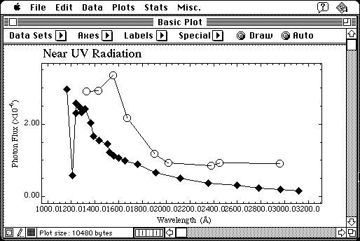

Download
Graf2.7.4.zip (168K) Graf 2.7.4 repackaged into a zipped hfs disk image and checksum file. The disk image can be mounted with Mini vMac.
Graf2.7.4.sit.hqx (225K) Graf 2.7.4 in the original format.
GrafExamples.zip (78K) Graf Examples repackaged into a zipped hfs disk image and checksum file. The disk image can be mounted with Mini vMac.
GrafExamples.sit.hqx (102K) Graf Examples in the original format.
copyright: Ralph S. Sutherland
mod date: Jun 6, 1997
license: freeware
from url :
Mac Stuff
"Scientific plotting and statistics".

If you find these downloads useful, please consider helping the Gryphel Project, which hosts them.
Here are the md5 checksums for the downloads, signed with Gryphel Key 5:
--------- GRY SIGNED TEXT --------- a1b78456257b523324997bd247416c75 Graf2.7.4.zip 56fd369e0f5d0f496c3e990df7008e92 Graf2.7.4.sit.hqx 8f307982e440b551817ae9e9ffce3937 GrafExamples.zip 18f6d4cd49df3c0478493003f62e99d0 GrafExamples.sit.hqx ------- BEGIN GRY SIGNATURE ------- Gry/4Xa8CFcUzxdN/B/nXrwHs1F2oz/TY9E169J0SKueRdBwU1oPFJKtwquG2hpX 0nLruruIuDCPQOQzcq7m2i9TRJPFHHUkLBa2Jvok0f5OEhD50nM56qinAIQiHcEx EAWl/C33rcrWGyRJy+1bilJvRU/PF1mwnQQ2+5y3FMf2cowxK4KUilH+uPte39Jy -------- END GRY SIGNATURE --------